Loading ...
|
4-2-3-1
|
England | 4 | - | 2 | Croatia |
3-4-2-1
|
| HT 2-2 | ||||||
|
FIFA World CupWednesday 17 June 2026
|
||||||
- Venue
- Dallas Stadium
- Attendance
- 70,389
- Referee
- Clément Turpin
Penalty scored12'
H. Kane
Goal42'
H. Kane
Assist: D. Rice
Goal47'
J. Bellingham
Assist: E. Anderson
- 3
Substitution72'
D. Rice
M. Rogers
N. Madueke
B. Saka
A. Gordon
M. Rashford
Substitution80'
J. Bellingham
D. Spence
Goal85'
M. Rashford
Assist: B. Saka
Substitution87'
J. Stones
M. Guéhi
Whistle45+6'
45+6'
Goal36'
M. Baturina
Assist: P. Sučić
Goal45+5'
P. Musa
Assist: I. Perišić
Substitution58'
L. Modrić
M. Kovačić
- 2
Substitution66'
P. Musa
I. Matanović
L. Vušković
Marco Pašalić
- 2
Substitution78'
Mario Pašalić
A. Kramarić
M. Baturina
N. Vlašić
England | |
|---|---|
Goalkeeper | |
| 1 | J. Pickford |
Defender | |
| 2 | E. Konsa |
| 3 | N. O'Reilly |
| 5 | J. Stones 87' |
| 24 | R. James |
Midfielder | |
| 4 | D. Rice 72' |
| 8 | E. Anderson |
| 10 | J. Bellingham 47'80' |
| 18 | A. Gordon 72' |
| 20 | N. Madueke 72' |
Forward | |
| 9 | H. Kane 12'42' |
Substitutes | |
| 6 | M. Guéhi 87' |
| 7 | B. Saka 72' |
| 11 | M. Rashford 72'85' |
| 17 | M. Rogers 72' |
| 25 | D. Spence 80' |
Croatia | |
Goalkeeper | |
| 1 | D. Livaković |
Defender | |
| 4 | J. Gvardiol |
| 6 | J. Šutalo |
| 22 | L. Vušković 66' |
Midfielder | |
| 2 | J. Stanišić |
| 10 | L. Modrić 58' |
| 14 | I. Perišić |
| 15 | Mario Pašalić 78' |
| 16 | M. Baturina 36'78' |
| 17 | P. Sučić |
Forward | |
| 26 | P. Musa 45+5'66' |
Substitutes | |
| 8 | M. Kovačić 58' |
| 9 | A. Kramarić 78' |
| 13 | N. Vlašić 78' |
| 20 | I. Matanović 66' |
| 24 | Marco Pašalić 66' |


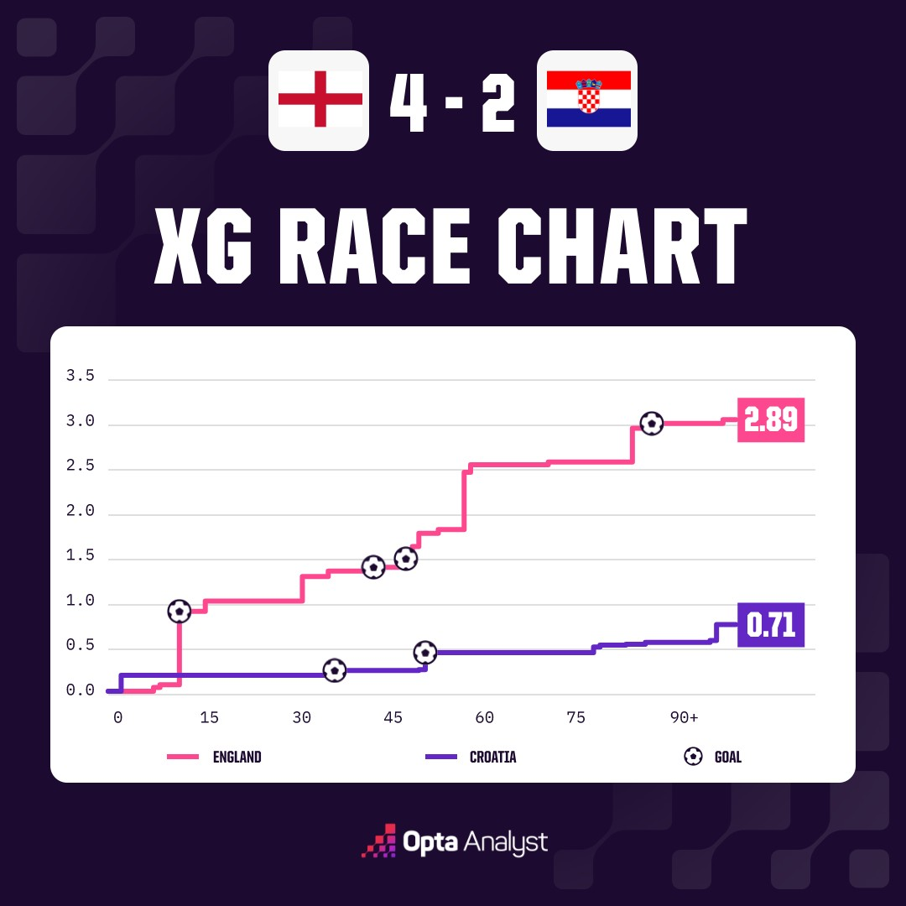
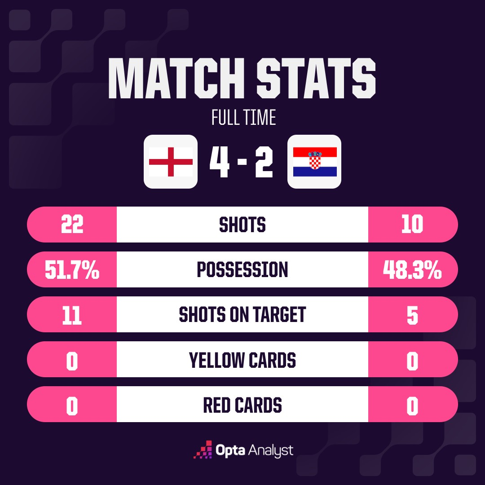
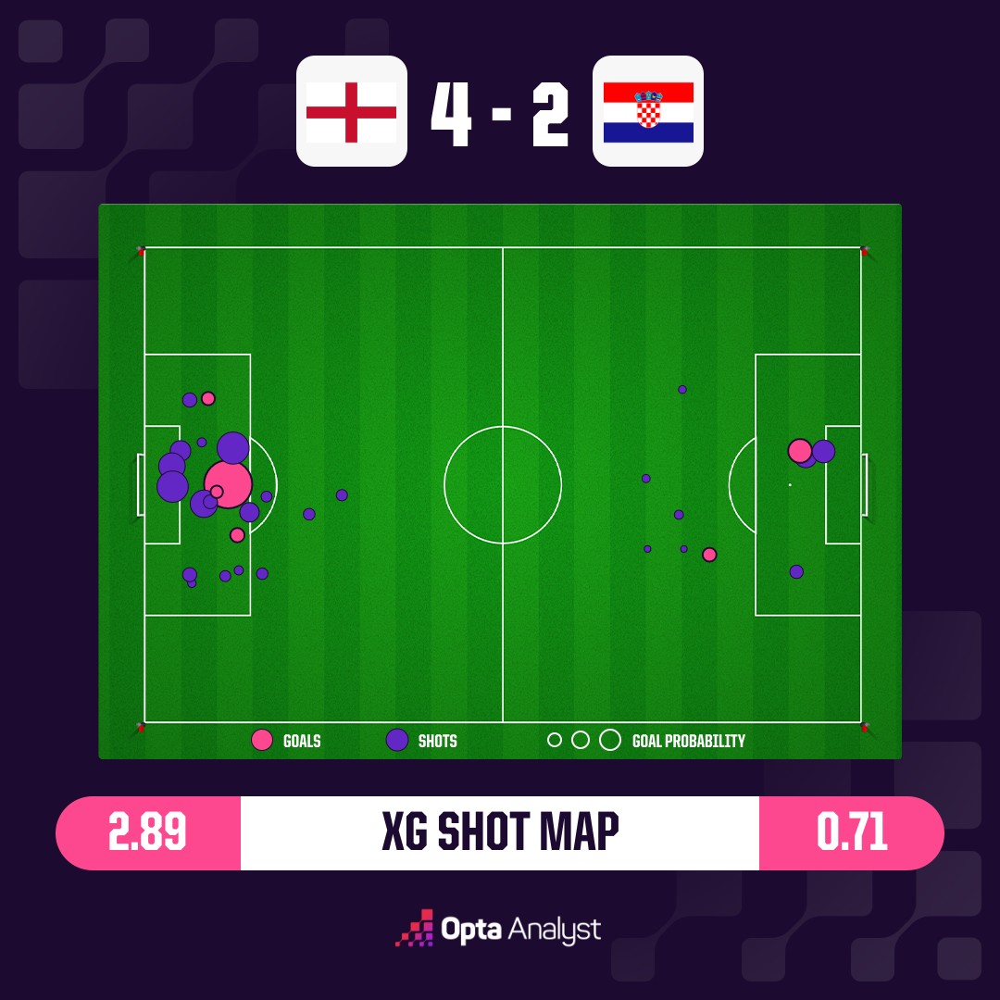
90+7'
IT’S ALL OVER! England have taken the victory, winning 4-2 thanks to goals from Jude Bellingham, Marcus Rashford and Harry Kane. England can celebrate, but Croatia will have to lick their wounds.
90+6'
MISS! The score remains 4-2, with Croatia relieved after England’s Harry Kane goes for goal but sends their attempt off target. Not one to write home about, that one.
90+5'
A free-kick in a dangerous position now for England, after a foul from Petar Sučić on Morgan Rogers. Can England make Croatia pay for that rashness from Petar Sučić?
90+5'
Croatia will not get back into the match with finishing like that! A huge chance comes the way of Josko Gvardiol but they are unable to beat the goalkeeper, so there remains a significant gap between the teams.
90+4'
A foul from Elliot Anderson on Mateo Kovačić sees Croatia win a free-kick, but it is not in a dangerous position, so England should be confident they can defend it easily enough.
90+4'
It's all hands on deck for England as they defend their lead, making a wave of critical blocks and clearances
90+4'
Shot blocked! Andrej Kramarić unleashes an attempt at goal, but the ball does not reach its target thanks to Reece James, who makes a solid block to stem the danger – for now.
90+1'
A rash challenge from Nikola Vlašić, who sends Ezri Konsa tumbling, giving England a free-kick. It is not in a threatening position, but it gives them a chance to get back on the ball.
87'
John Stones’s match is over as England decide to make a substitution. Marc Guéhi enters the field in what looks like a tactical change.
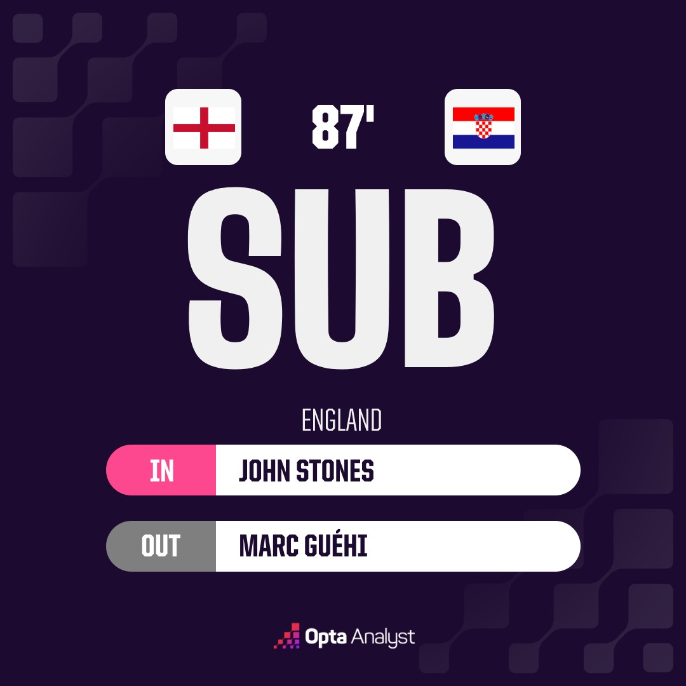
85'
England have scored 4 goals in the FIFA World Cup game for the first time since 21st November 2022 against IR Iran (W6-2).
85'
GOAL! England have extended their lead! It's Marcus Rashford who has got the goal, and Croatia are now two goals behind, with England now in a strong position to record a victory.
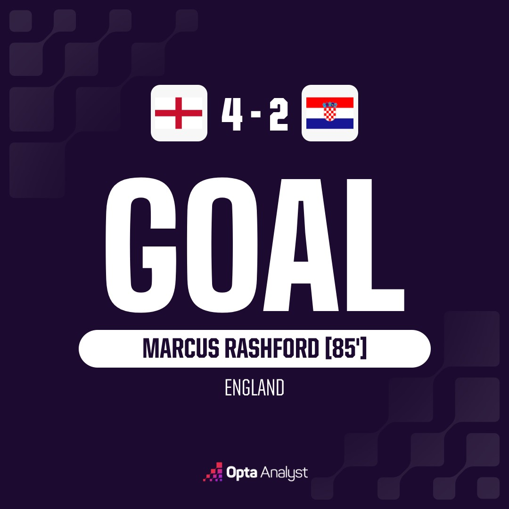
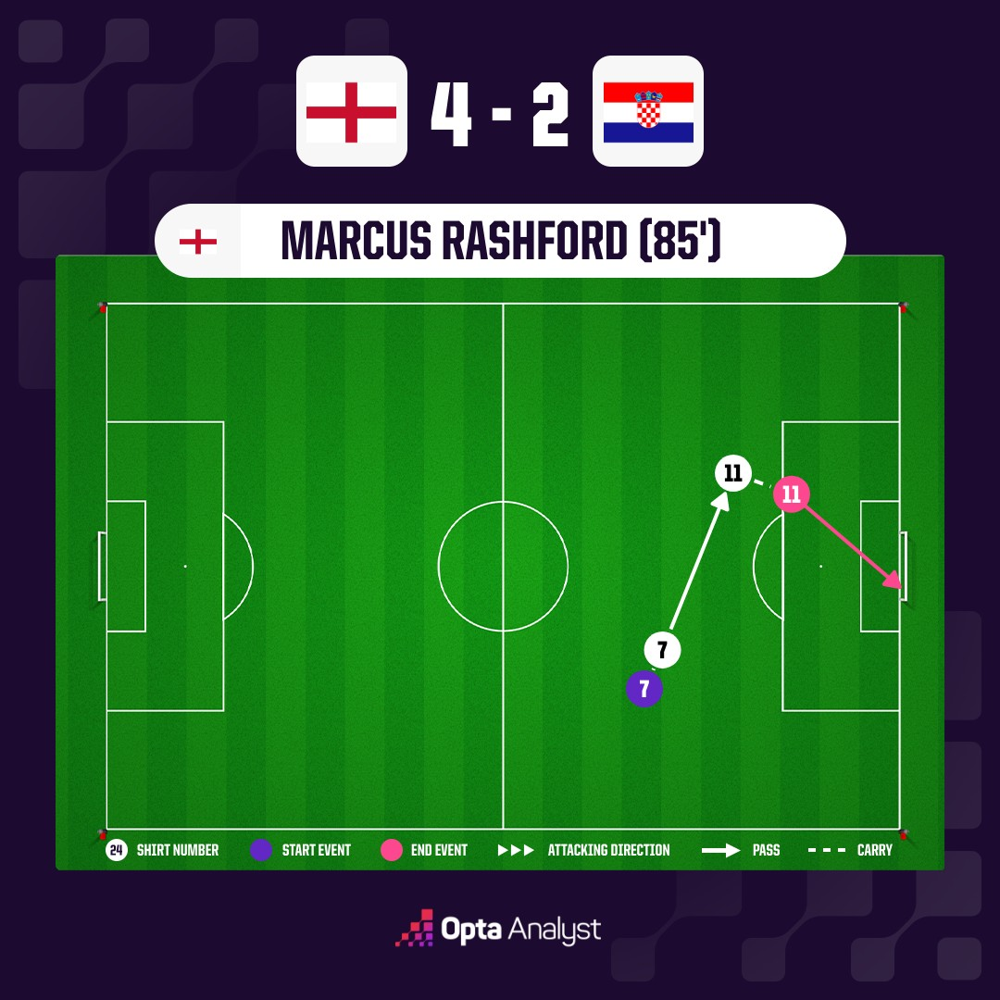
84'
SAVE! A shot from outside the box by Croatia Mateo Kovačić was heading in, but England Jordan Pickford keeps it out with a smart stop.
83'
A rash challenge from Reece James, who sends Igor Matanović tumbling, giving Croatia a free-kick. It is not in a threatening position, but it gives them a chance to get back on the ball.
82'
MISS! Djed Spence fluffs their lines, and will England be made to pay for that miss? Croatia could have been down and out if that attempt had gone in, but at least they have not fallen even further behind in this contest.
81'
That is a disappointing effort from Petar Sučić, who went for glory but got their attempt wrong, and the shot sailed off target. A frustrating moment for Croatia.
80'
The England manager is looking to the substitutes’ bench, bringing on Djed Spence in place of Jude Bellingham. Will the change make a difference? Let’s find out!
79'
Free-kick! A foul from Igor Matanović on Ezri Konsa. It is well away from Croatia’s goal, so it is unlikely to result in a chance for England.
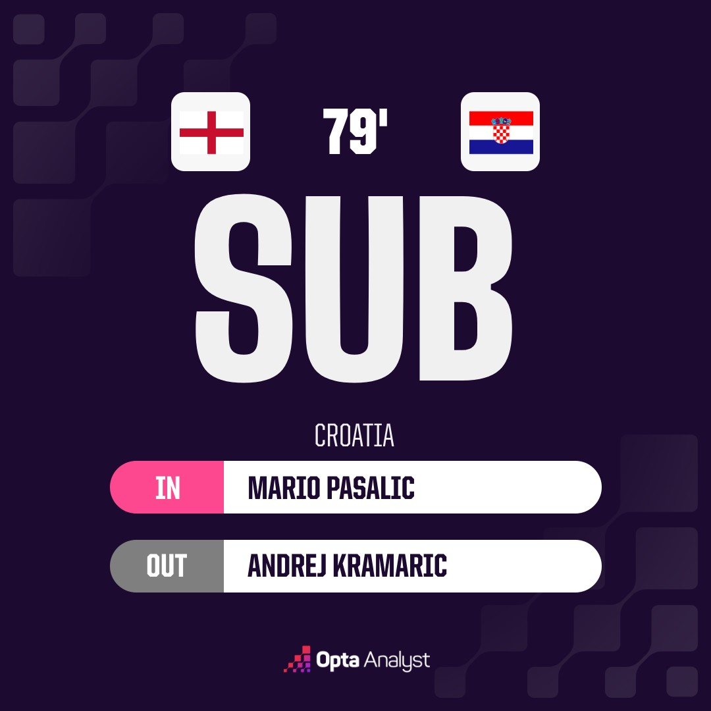
78'
Substitution! Nikola Vlašić replaces Martin Baturina for Croatia as the manager shuffles the pack. Can Nikola Vlašić make an impression as this match continues?
78'
Andrej Kramarić is making his 15th appearance in the FIFA World Cup.
78'
A substitution for Croatia sees Mario Pašalić replaced by Andrej Kramarić. There does not appear to be any obvious sign of an injury, so that is a tactical switch.
78'
England offside trap works a treat as they step up and catch Marco Pašalić offside. Croatia are searching for a goal, but their players will need to play smarter to keep themselves on the right side of the line.
77'
SAVE! A shot from outside the box by Croatia Igor Matanović was heading in, but England Jordan Pickford keeps it out with a smart stop.
76'
Save! A big stop from Jordan Pickford, who reacts to keep out Marco Pašalić's attempt from inside the area.
73'
A free-kick to England, as Ivan Perišić goes in and fouls Bukayo Saka. However, Croatia will not mind giving one away in this area too much, with plenty of distance to their goal.
72'
The England manager is looking to the substitutes’ bench, bringing on Marcus Rashford in place of Anthony Gordon. Will the change make a difference? Let’s find out!
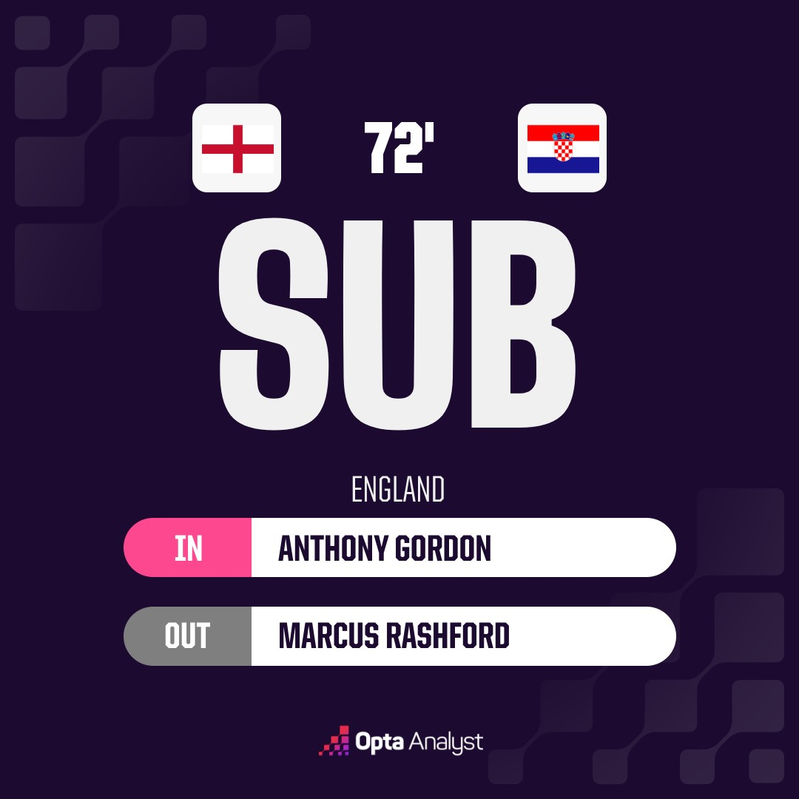
72'
Substitution! Bukayo Saka replaces Noni Madueke for England as the manager shuffles the pack. Can Bukayo Saka make an impression as this match continues?
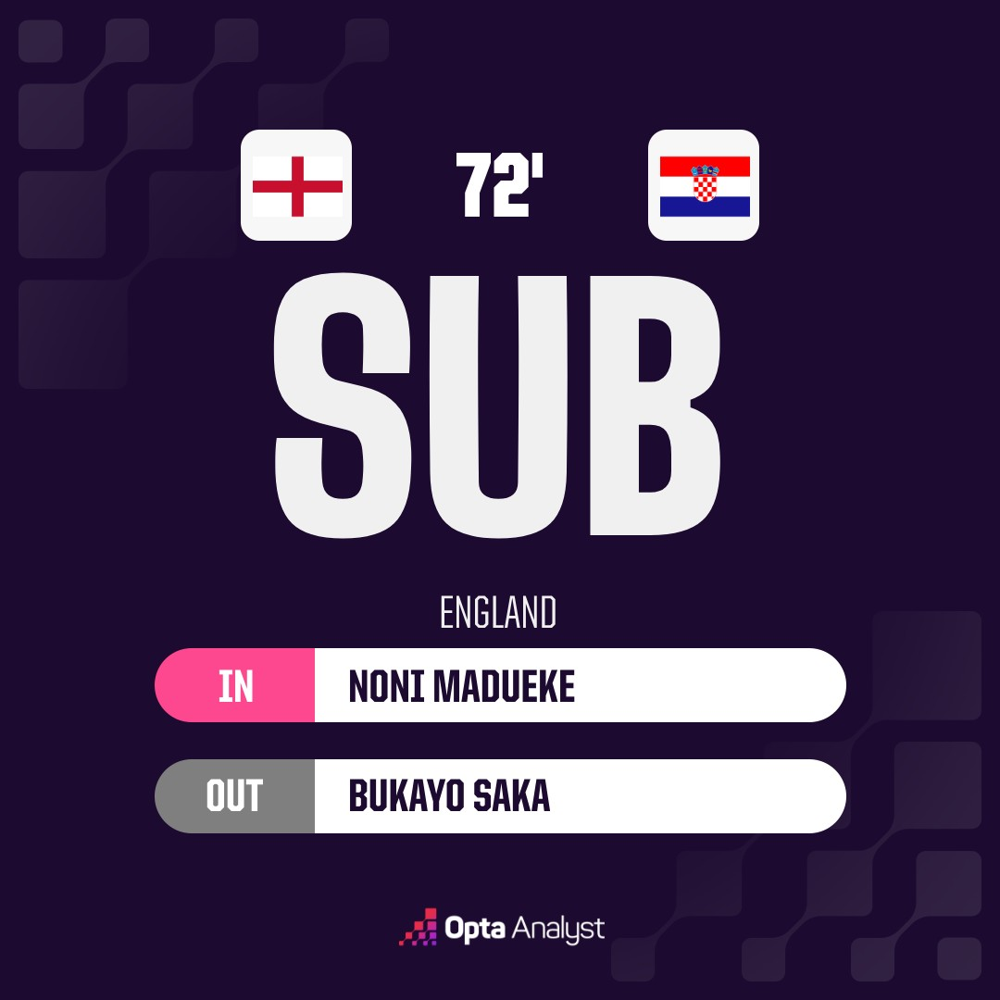
72'
Substitution! Morgan Rogers replaces Declan Rice for England as the manager shuffles the pack. Can Morgan Rogers make an impression as this match continues?
69'
Shot blocked! Anthony Gordon unleashes an attempt at goal, but the ball does not reach its target thanks to Josip Stanišić, who makes a solid block to stem the danger – for now.
67'
A foul from Igor Matanović on Jordan Pickford sees England win a free-kick, but it is not in a dangerous position, so Croatia should be confident they can defend it easily enough.
67'
Neither team has had a shot in the past 10 minutes, as this match just enters something of a down period. England have seen more of the ball, with 75 per cent possession, but Croatia are keeping them away from goal. There is still a chance the match will spark into life, though.
66'
Substitution! Marco Pašalić replaces Luka Vušković for Croatia as the manager shuffles the pack. Can Marco Pašalić make an impression as this match continues?
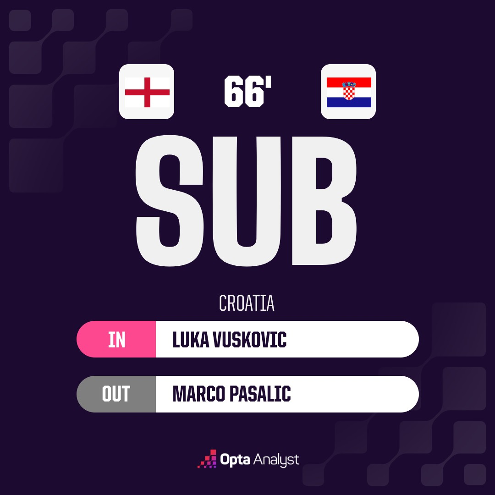
66'
Croatia are making a tactical change. Petar Musa is leaving the field and in their place comes Igor Matanović – we will soon see if this switch has the desired impact.
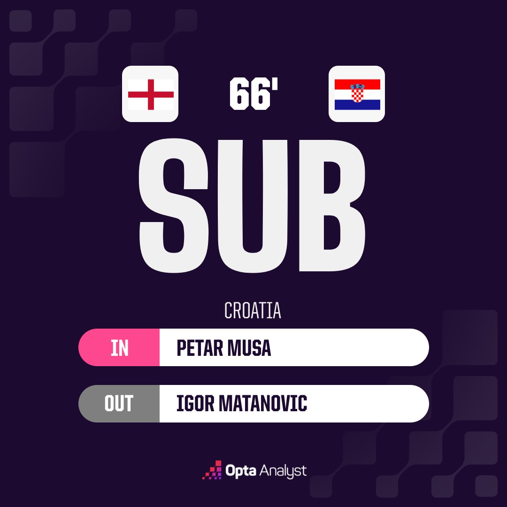
66'
With 65 minutes gone, it is England who lead the shot count, with 18 to Croatia’s 4. England have got 9 of those on target, while Croatia have managed to get 2 on target.
65'
In the last 15 minutes, it is England who have dominated the ball, having seen 65.00% of the possession, yet they have not been able to go and turn that into a goal just yet, with their opponents standing firm.
65'
A free-kick to England, as Mateo Kovačić goes in and fouls Elliot Anderson. However, Croatia will not mind giving one away in this area too much, with plenty of distance to their goal.
62'
Free-kick! A foul from Harry Kane on Mateo Kovačić. It is well away from England’s goal, so it is unlikely to result in a chance for Croatia.
61'
A foul from Ivan Perišić on John Stones sees England win a free-kick, but it is not in a dangerous position, so Croatia should be confident they can defend it easily enough.
58'
Substitution! Mateo Kovačić replaces Luka Modrić for Croatia as the manager shuffles the pack. Can Mateo Kovačić make an impression as this match continues?
58'
Mateo Kovačić is making his 16th appearance in the FIFA World Cup.
57'
No luck! Harry Kane takes on a shot that, had they got it right, might have been set to test the goalkeeper, but instead it is sent off target and Croatia come away unscathed.
57'
Harry Kane has attempted 5 shots, the first time he has attempted at least 5 shots in a match in the FIFA World Cup since facing France on 10th December 2022 (5 shots).
57'
SHOT! Harry Kane manages to get a shot off from inside the area, but although it was heading in, they cannot get enough on it to beat Dominik Livaković, who makes the save.
56'
Despite trailing, Croatia are showing real defensive grit, digging in and stopping further damage as they try to build a platform.
56'
Dominik Livaković has made 5 saves, the first time he has made at least 5 saves in a match in the FIFA World Cup since facing Brazil on 9th December 2022 (11 saves).
56'
What a miss! That is a bad finish from Ezri Konsa, who has been unable to convert from a good opportunity, seeing a big chance for England to extend their lead go begging. Will Croatia make them pay for that profligacy?
56'
MISS! Anthony Gordon fluffs their lines, and will England be made to pay for that miss? Croatia could have been down and out if that attempt had gone in, but at least they have not fallen even further behind in this contest.
56'
Chance! A shot from inside the area from Nico O'Reilly was heading in, but Dominik Livaković makes a fine stop to keep it out. A big save from the Croatia shot-stopper!
52'
CORNER! The pressure is building for England as they win a set-piece after Declan Rice's attempt is blocked by Dominik Livaković and diverted out of play.
51'
Great defending from England, who are staying organised and winning key battles to preserve their lead.
51'
Can Croatia make this chance count? They have won a free-kick in a threatening position after a foul from John Stones on Martin Baturina. Will England's defence be tested here?
49'
What a miss! That is a bad finish from Nico O'Reilly, who has been unable to convert from a good opportunity, seeing a big chance for England to extend their lead go begging. Will Croatia make them pay for that profligacy?
48'
England win a corner after Jude Bellingham sees a shot diverted wide by Dominik Livaković. Can England make this opportunity count, or will Croatia defend this?
47'
England have scored 3 goals in the FIFA World Cup game for the first time since 4th December 2022 against Senegal (W3-0).
47'
GOAL! England move in front! Jude Bellingham provides the decisive touch from inside the penalty area to leave Croatia chasing the game. It is too early to predict whether that will prove the winner, but as things stand England have the advantage!
47'
More of the same from England since the restart. Another patient passing sequence as they probe for openings, the rhythm already clicking again after the break.
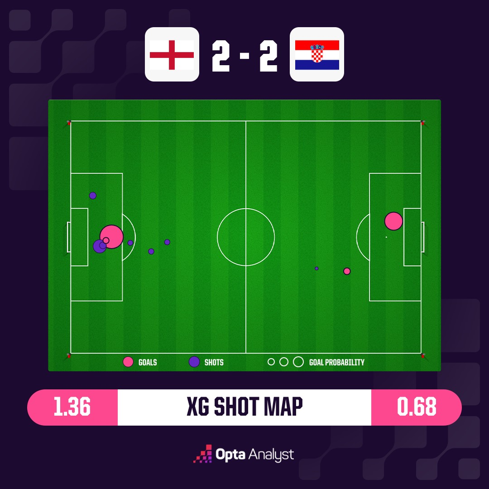
45+6'
Half-time! The referee blows the whistle and it is time for the interval. As we reach the break it is England 2-2 Croatia at Dallas Stadium.
45+5'
We are level! It’s all square after Petar Musa finishes from inside the area. It’s Croatia 2-2 England – will either team go onto win it now? It’s all to play for in the final stages.
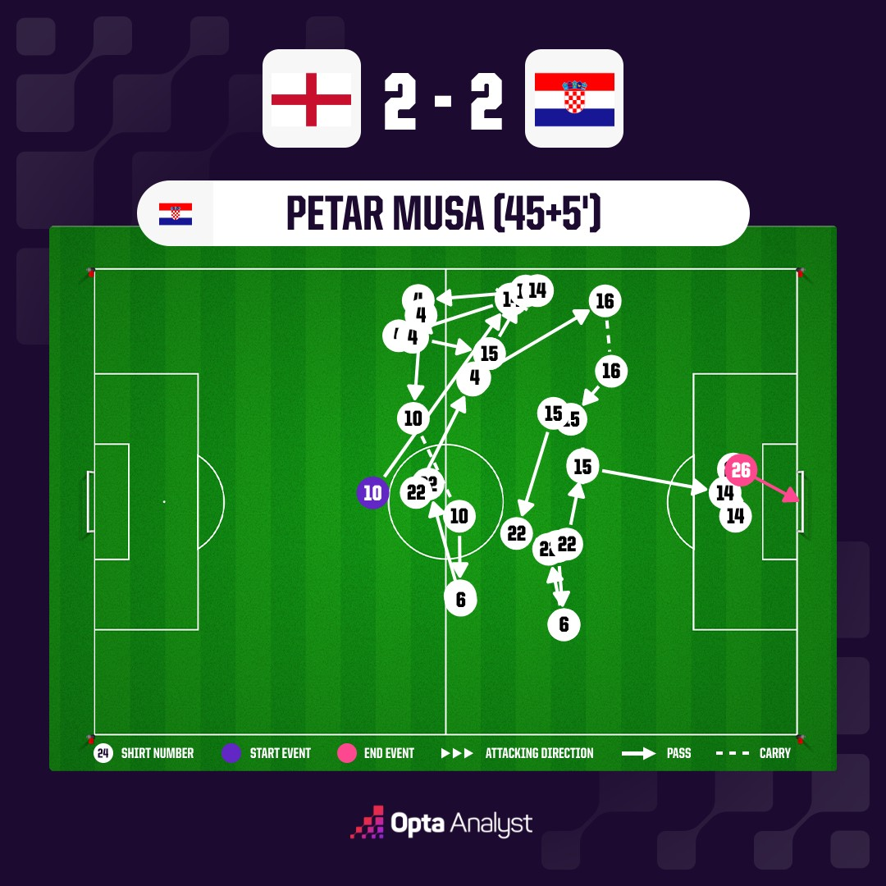
45+4'
A foul from Harry Kane on Luka Modrić sees Croatia win a free-kick, but it is not in a dangerous position, so England should be confident they can defend it easily enough.
45+4'
MISS! A shot from Mario Pašalić ends up being off target. They might have done a bit better with that one, but it remains Croatia 1-2 England.
45+1'
Shot blocked! Reece James unleashes an attempt at goal, but the ball does not reach its target thanks to Luka Modrić, who makes a solid block to stem the danger – for now.
45+1'
This could be a chance for England, after Mario Pašalić fouls Jude Bellingham, handing them a free-kick in a threatening area. A good set-piece from here could really test the Croatia defense!
42'
Harry Kane has scored his 10th goal in the FIFA World Cup.
42'
GOAL! England move in front! Harry Kane provides the decisive touch from inside the penalty area to leave Croatia chasing the game. It is too early to predict whether that will prove the winner, but as things stand England have the advantage!
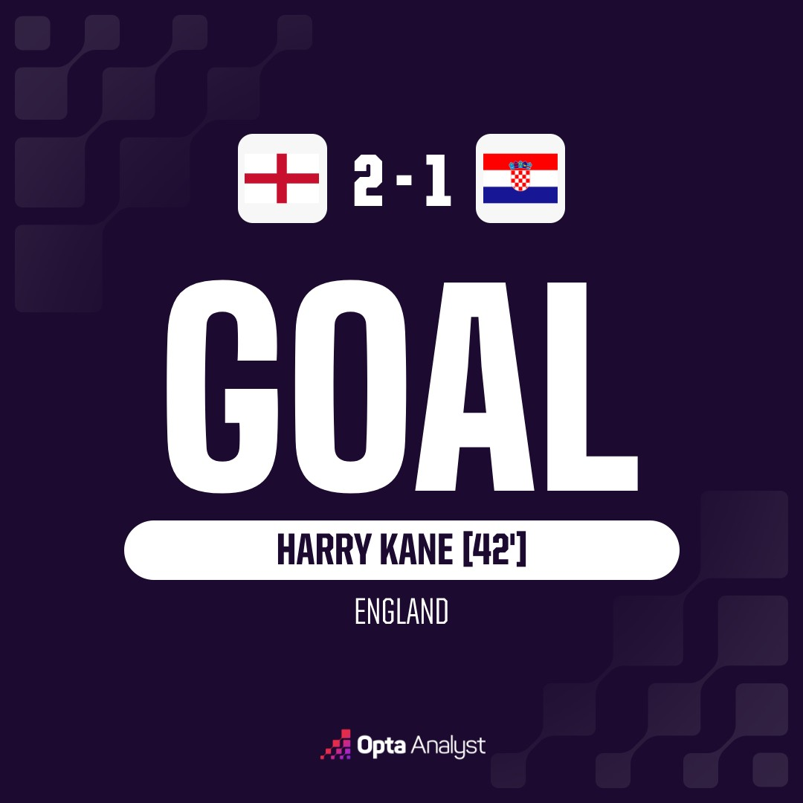
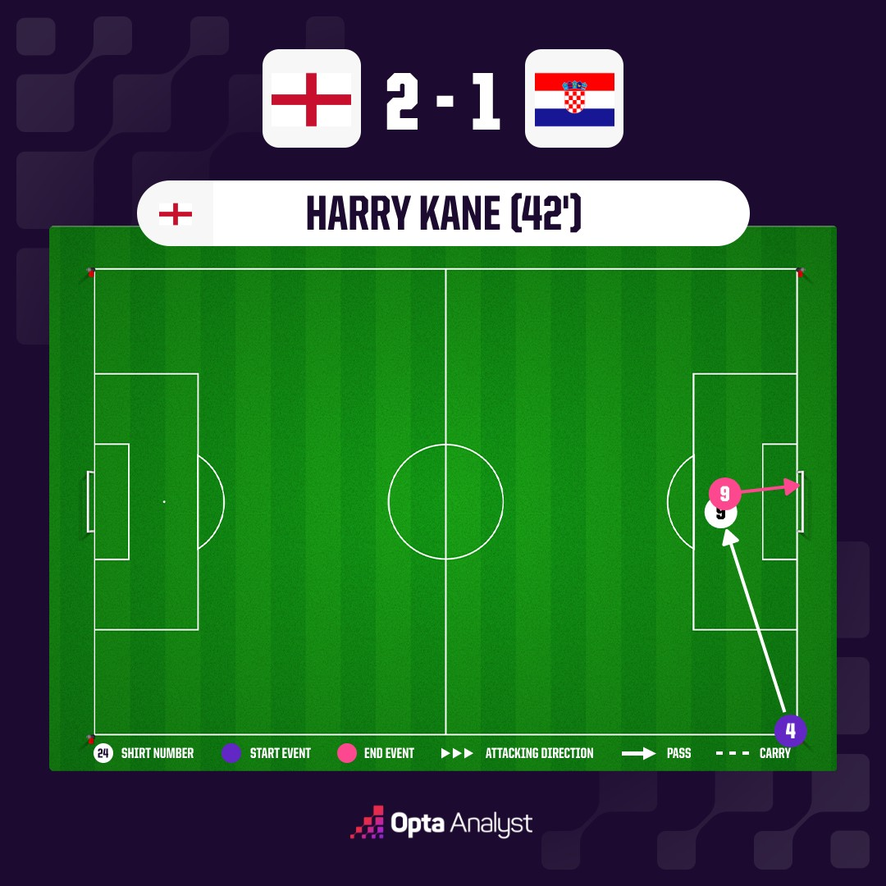
40'
A rash challenge from Ezri Konsa, who sends Petar Musa tumbling, giving Croatia a free-kick. It is not in a threatening position, but it gives them a chance to get back on the ball.
39'
Elliot Anderson goes in on Martin Baturina and concedes a foul. The free-kick is not in a particularly dangerous area from England’s viewpoint, though.
36'
WHAT A GOAL! That’s the moment Croatia had been waiting for, as a long-range effort from Martin Baturina has hauled them level. It’s all square now!
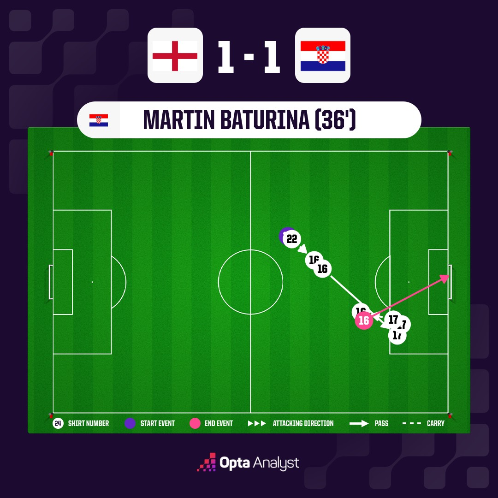
35'
A chance goes begging as Harry Kane gets off a shot that does not hit the target. They might have done better with that one, but instead it is a goal-kick to Croatia.
33'
A rash challenge from Nico O'Reilly, who sends Josip Stanišić tumbling, giving Croatia a free-kick. It is not in a threatening position, but it gives them a chance to get back on the ball.
33'
It has been 30 minutes since Croatia last attempted a shot in this game.
32'
A foul from Petar Sučić on Nico O'Reilly sees England win a free-kick, but it is not in a dangerous position, so Croatia should be confident they can defend it easily enough.
32'
A foul from Petar Musa on Elliot Anderson sees England win a free-kick, but it is not in a dangerous position, so Croatia should be confident they can defend it easily enough.
31'
An opportunity for England to extend their lead goes begging, as Jude Bellingham is unable to convert from a good opening. Will they live to regret that miss?
31'
England have attempted the last 6 shots in this game, Croatia last shot was taken by Josip Šutalo in the third minute.
28'
Luka Vušković goes in on Harry Kane and concedes a foul. The free-kick is not in a particularly dangerous area from Croatia’s viewpoint, though.
26'
Neither team has had a shot in the past 10 minutes, as this match just enters something of a down period. England have seen more of the ball, with 57 per cent possession, but Croatia are keeping them away from goal. There is still a chance the match will spark into life, though.
20'
A free-kick to Croatia, as Elliot Anderson goes in and fouls Luka Vušković. However, England will not mind giving one away in this area too much, with plenty of distance to their goal.
19'
Declan Rice goes in on Petar Sučić and concedes a foul. The free-kick is not in a particularly dangerous area from England’s viewpoint, though.
16'
That might have been going in! A fantastic block from Luka Vušković, who gets in the way of a goal-bound effort from Elliot Anderson. Would the goalkeeper have been beaten? We will never know.
16'
CORNER! The pressure is building for England as they win a set-piece after Noni Madueke's attempt is blocked by Mario Pašalić and diverted out of play.
15'
Decision overturned! The referee’s original call is deemed to be wrong by VAR, and after a check, it has been changed. The technology has played a major role there.
15'
VAR is reviewing the incident. Will the decision stand, or will it be overturned?
12'
England have avoided defeat in their last 3 matches when scoring first in the FIFA World Cup, since a 1-2 loss to Croatia on 11th July 2018.
12'
Harry Kane has scored his ninth goal in the FIFA World Cup.
12'
PENALTY SCORED! Harry Kane makes no mistake from the spot, calmly putting away their effort to put England ahead. Can Croatia get back into this from here? It’s 1-0.
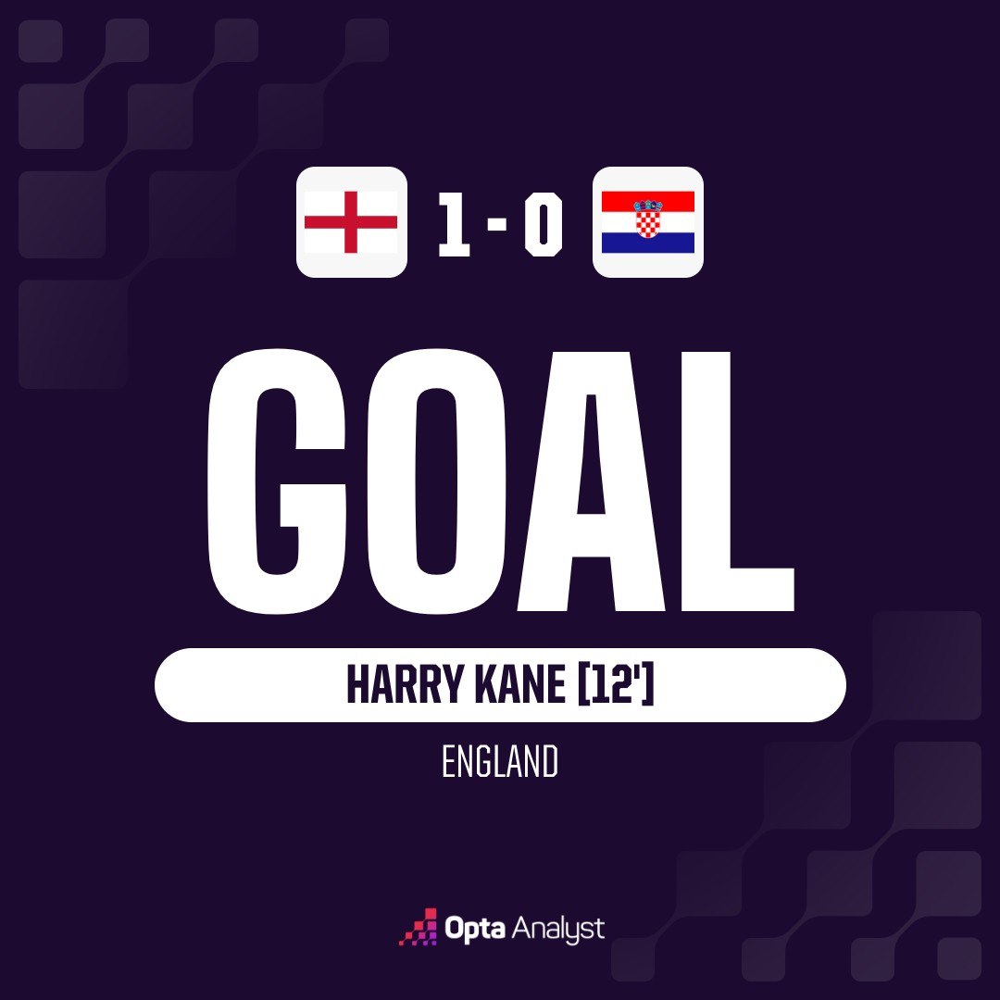
11'
OVERTURNED! VAR has decided to intervene here, and after that comprehensive check, the referee’s decision has been overturned.
11'
VAR is reviewing the incident. Will the decision stand, or will it be overturned?
9'
That’s a penalty! The referee points to the spot and England now have the chance to take the lead after Luka Modrić committed a foul in Croatia’s area. Will England take this opportunity?
9'
No luck! Ezri Konsa takes on a shot that, had they got it right, might have been set to test the goalkeeper, but instead it is sent off target and Croatia come away unscathed.
8'
Harry Kane's effort is deflected out for a corner. Can England make anything of this set-piece?
3'
No luck! Josip Šutalo takes on a shot that, had they got it right, might have been set to test the goalkeeper, but instead it is sent off target and England come away unscathed.
2'
A chance now for Croatia to get a good delivery into the box, after the ball is diverted behind for a corner. Croatia have been pushing for what would be a key goal, but England have stood firm so far.
1'
KICK-OFF! And here we go! We are up and running in this clash between England and Croatia at Dallas Stadium. Stay tuned for all the action as it happens!
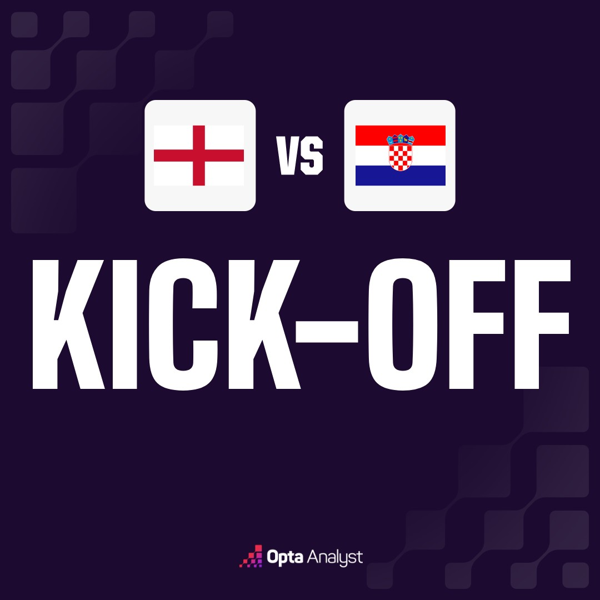
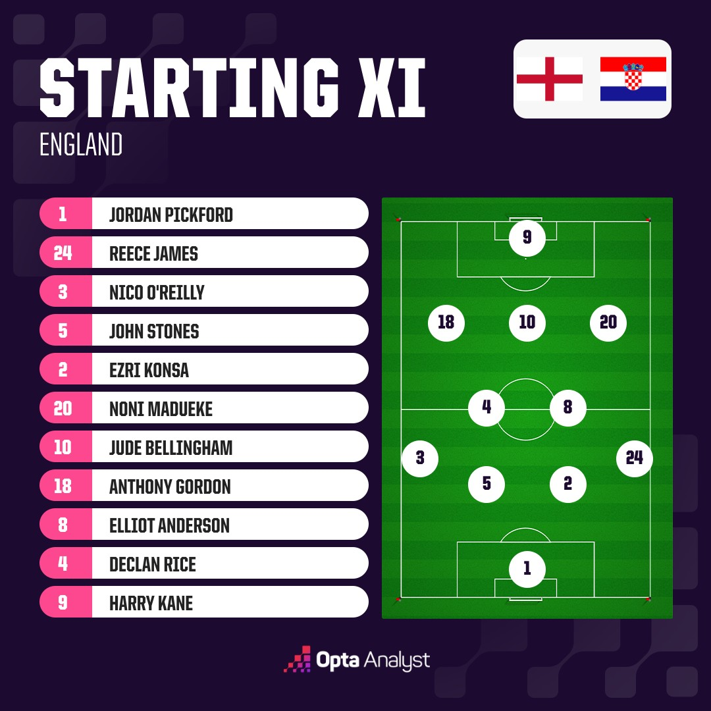
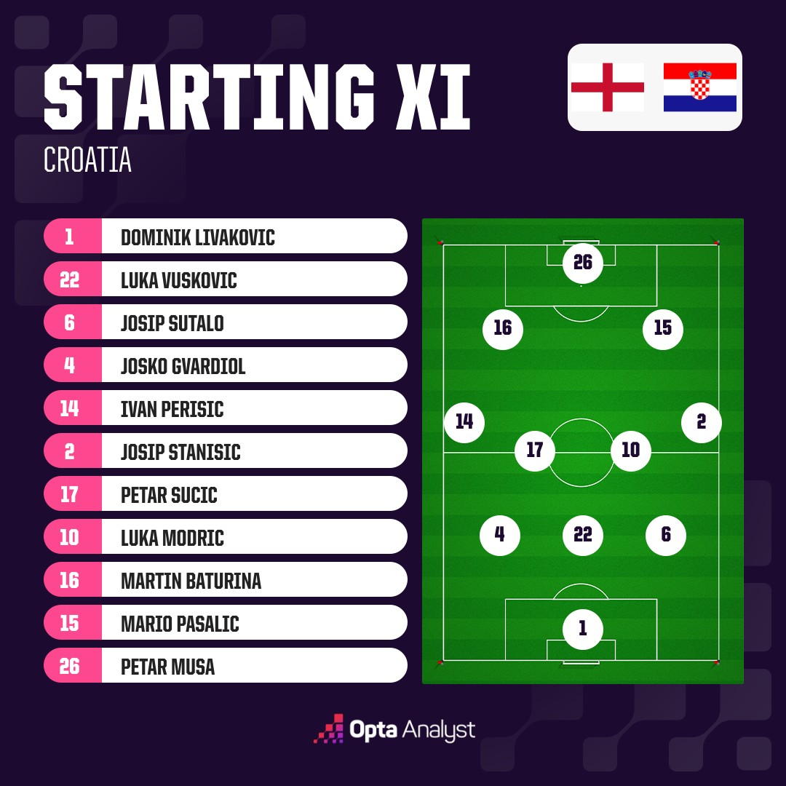
Luka Modrić is making his 20th appearance in the FIFA World Cup.
Ivan Perišić is making his 18th appearance in the FIFA World Cup.
England have won their last 11 matches in a row
England have kept a clean sheet in the last 10 matches
England have outscored their opponents in both halves in each of their last 4 home games
England have kept a clean sheet in the last 5 home matches
England have only lost one of their last 5 games against Croatia
England take on Croatia on Wednesday for their opening match of the 2026 Canada/Mexico/USA FIFA World Cup group stage at Dallas Stadium.
It's the first match of the competition for both sides. England earned a 3-0 victory over Costa Rica in their last match, a June 10 friendly at Inter&Co Stadium. Declan Rice, Anthony Gordon, and Ollie Watkins were on the scoresheet in the win. In four games this year, they have two wins, one draw, and one loss.
Croatia won their last game on June 7, beating Slovenia 2-1 in a friendly at Stadion Anđelko Herjavec. Luka Modric and Mario Pasalic were on the scoresheet in the win. In 2026, they have won two and lost two.
England won the last meeting between the sides, emerging victorious 1-0 in an UEFA European Championship Group Stage match at Wembley Stadium in June 2021. Raheem Sterling scored for the English side in the 57th minute.
England have got the better of Croatia of late, unbeaten in their last three matches. Croatia are looking for their first win in fixtures between the two sides since July 2018. England have outscored Croatia 3-1 during their unbeaten streak.
Five players rank as joint top scorers for England in 2026 with one goal apiece. Croatia have been led by five players who have each netted once this year.
In their last six matches in all competitions, England have won four, drawn one and lost one. The English side scored nine and conceded two over that stretch, scoring first in five of the six contests. They had three first-half goals, while their opponents netted once in the first 45 minutes. The Croatian side have won four and lost two in their last six. The Croatian side scored 11 and conceded 10 in that stretch, netting first in one of the six. They had four goals in the first half, while their opponents netted six times before the break.
-
General
Possession 51.7% 51.73148.26948.3% Possession lost in defensive half 34 343333 Possession lost in middle third 39 394343 Duels 86 868686 Duels success rate 46.5% 46.51248.83748.8% Aerial duels 28 282828 Aerial duels won 42.9% 42.85757.14357.1% Successful dribbles 7 755 Fouls won 12 121010 Offsides 0 011 Corner awarded 8 822 -
Distribution
Passes 474 474443443 Long passes 41 414242 Long passes proportion (%) 8.6% 8.659.4819.5% Passing accuracy 85.7% 85.65486.00586.0% Passes in opponents' half 170 170204204 Passing accuracy in opponents' half (%) 70.0% 7078.92278.9% Total passes in the final third 81 818686 Passing accuracy in final third (%) 60.5% 60.49474.41974.4% Forward passes 275 275258258 Forward passes (%) 58.0% 58.01758.23958.2% Through balls 5 511 Final third entries 40 403232 Penalty area entries 25 252121 Total open play crosses 6 61010 Crosses 13 131313 Crossing accuracy 46.2% 46.15415.38515.4% -
Attack
Goals 4 422 Shots 22 221010 Shots on target 11 1155 Blocked shots 5 522 Headed shots 6 600 Shots outside the box 2 266 Shots inside the box 20 2044 Shots accuracy excluding blocked shots 64.7% 64.70662.562.5% Shooting accuracy 50.0% 505050.0% Key Passes 15 1577 -
Defence
Tackles 9 91111 Tackles success rate 77.8% 77.77872.72772.7% Clearances 16 161717 Interceptions 7 799 Recoveries 47 474040 Attacking third recovery 2 255 Defensive third recovery 24 242020 Midfield third recovery 21 211515 Recoveries in attacking half (%) 4.3% 4.25512.512.5% -
Discipline
Fouls conceded 10 101212 Yellow cards 0 000 Red cards 0 000